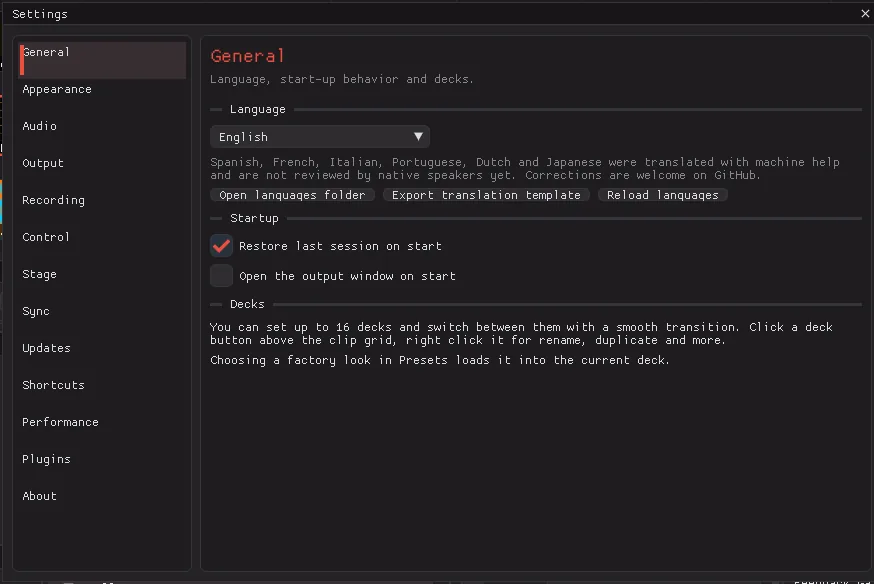

Contents
Getting started
- Welcome to NyrexVJ
- Installing and first start
- The window at a glance
- Your first show in five minutes
Playing visuals
- The clip grid
- Decks and transitions
- Layers and blending
- The Clip window
- Effects
- The Library
- Presets and sessions
- The Master window
Music and motion
Your own content
- Video and image clips
- Your own shaders
- 3D models
- The Clip Creator
- Text, particles and effect chains
- The node effect editor
- Live sources: Spout, NDI and cameras
Output and recording
Live control and shows
- Control: MIDI, OSC and the web page
- Show sync and timecode
- The show timeline
- Stage: DMX, VRSL and VRChat
- Plugins
Reference and help
Manual / Reference and help
Settings reference
#Opening Settings
Open Settings with the menu Settings or with Ctrl+,. The window has a list of pages on the left.
| Page | What you find |
|---|---|
| General | Language, restore the last session, open the output window on start, decks |
| Appearance | Theme colour, interface size and display scale, contrast, keyboard navigation, status bar, reset the window layout and your workspaces |
| Audio | Audio source, gain, smoothing, beat sensitivity, sync BPM to audio |
| Output | Quality and resolution, Spout, NDI, up to four output windows with slices, mapping, blending, venue setups and frame lock |
| Recording | Format, size, frame rate, quality, sound, folder and the record buttons |
| Control | MIDI, OSC input and output, the web interface and its token |
| Stage | Art-Net, the DMX strip, VRChat parameters, channels and test patterns |
| Sync | Clock source, timecode, MIDI clock, Pro DJ Link, the cue list |
| Updates | Update channel, automatic checks and downloads, the update status |
| Shortcuts | Your keyboard shortcuts: change, clear or reset them |
| Performance | Frame rate limit, frame budget, render quality, text and particles, measured frame times, memory, video and FFmpeg, DXV conversion |
| Plugins | Installed plugins and their sources |
| About | Version, links, the data folder |


#Appearance
The theme colour changes the accent of the whole interface. There are ten themes: Studio (the default, a neutral dark with a red-orange accent), Orange, Blue, Red, Green, Purple, Pink, Cyan, Gold and Mono. Interface size scales all windows and text, and Reset sets it back. The same page holds the display scale, high contrast, keyboard navigation, the reset of the window layout and the workspaces; see Interface, workspaces and accessibility.
Found a mistake or something missing? Tell us on GitHub. The same manual is built into the program, so you have it without internet. Open it with F1 or from the Help menu, then User manual.